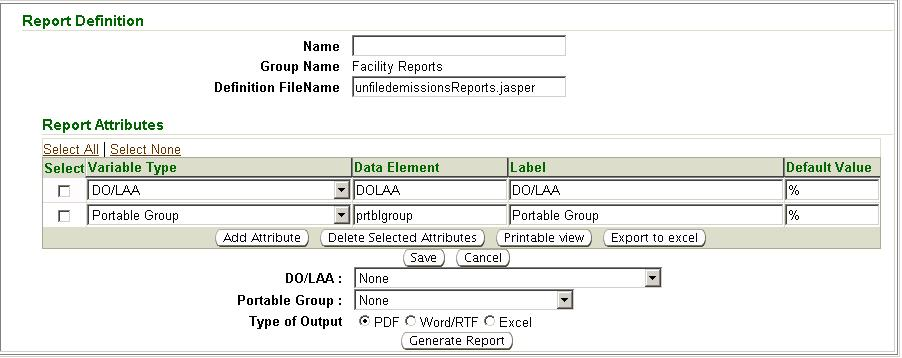

Previous Topic
Next Topic
| Mgmt Reports |
Previous Topic |
Next Topic |
The system’s second-level menu, Report Tree, of the Mgmt Reports tab allows you to select and generate reports associated with data in the system. For example, you could generate a report of un-filed emissions reports for a specific DO/LAA. Similarly, you could generate a report of Title V facilities issued a PTI but they have not submitted an application for a Title V permit. The Computer Automation Unit (CAU) in Central Office has the ability to build reports based upon user requests and needs. Once built, a System Administrator will add the report to the Report Tree where they would be accessible to all users. It is intended that this area of the system will grow over time as users request new reports be developed and installed.
This topic contains the following sections:
You can choose a Report Tree
option
by navigating through the folder(s). To navigate through a folder to
see available search options, click on the ‘+’ sign next to the
folder,  , expanding it,
, expanding it,  .
Below the expanded folder you will see choices for
available report options represented with the icon,
.
Below the expanded folder you will see choices for
available report options represented with the icon,  . Click on the
hyperlinked title next to the icon to open the selected report option
fields. You will enter the criteria under the Report Input Values
heading as text or by selecting from picklist(s). Then select via a
radio button the manner in which you would like the report generated
(PDF, Word/RTF
or Excel)
and click to begin the generation.
. Click on the
hyperlinked title next to the icon to open the selected report option
fields. You will enter the criteria under the Report Input Values
heading as text or by selecting from picklist(s). Then select via a
radio button the manner in which you would like the report generated
(PDF, Word/RTF
or Excel)
and click to begin the generation.
For example, when selecting Unfiled Emissions Report under the Facility Reports folder, you may select a specific from a picklist a DO/LAA and/or Reporting Category to filter by, or you may filter for all by using the default criteria None.
The report will be generated in the format using the search criteria you’ve selected and open in a second window for downloading or printing.
Only to be done by CAU staff or System Administrators
In the system you can create a new report, or clone a report to use as a starting point for creation of a report.
To create a new report
without cloning click on the folder you wish the report to fall under
in the Report
Tree,  , and under the Report Definition heading click .
You will see the screen identified under the heading “Creating a New
Folder of Reports” above. The fields are identical to those described
below for the Clone
Report button.
, and under the Report Definition heading click .
You will see the screen identified under the heading “Creating a New
Folder of Reports” above. The fields are identical to those described
below for the Clone
Report button.
To edit a report or create a new report by cloning an existing report, select the report you wish to edit or clone from the Report Tree and you will notice the following buttons under the Report Definition heading:

Once you have completed the fields click  to create the
report or click
to create the
report or click  to abort the process.
to abort the process.
Copyright © 1996, 2004, Oracle. All rights reserved.